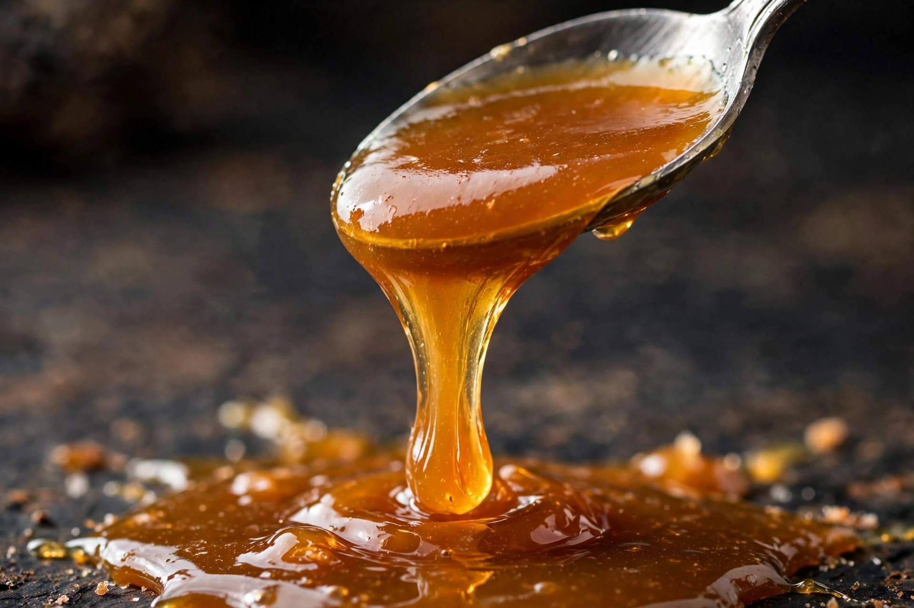

Caramel
From Wikipedia, the free encyclopedia

Caramel is a confectionery product made by heating sugar until it melts, darkens and develops complex, toasty flavours — a process called caramelisation. As a sauce, candy or flavouring it ranges in colour from pale gold to deep amber, almost mahogany, and in taste from sweet and buttery to intriguingly bitter. Caramel coats flans and popcorn, fills chocolates, tops ice cream, and flavours everything from coffee drinks to the custard of crème brûlée's crackling crust.
Caramelisation
Sugar (sucrose) melts around 160 °C and caramelises above roughly 170 °C as it decomposes into hundreds of new compounds — diacetyl (buttery), maltol (toasty) and bitter dark polymers among them. Cooks judge caramel by colour and smell, stopping the cooking by adding cream or butter (for sauces and soft caramels) or pouring it onto a cold surface. Water in "wet caramel" helps even heating; "dry caramel" is sugar alone. Caramelisation differs from the Maillard reaction, though both brown foods; many foods involve both.
Forms
Soft caramels are chewy candies of caramelised sugar with cream and butter, cooked to a lower final temperature so they stay pliable; salted caramel, popularised from Brittany (where salted butter is traditional) by chocolatier Henri Le Roux in the 1970s and later taken around the world, balances sweetness with salt. Hard caramel makes toffee-like shards, praline and nut brittles; caramelised sugar also gives colour to cola drinks (caramel colour, E150).
History
Hard sugar candies were made in the medieval Islamic world and Europe, but caramel as a distinct confection developed with cheaper sugar in the 17th–19th centuries; American caramel candies were industrialised in the 1880s (Milton Hershey began with a caramel company before chocolate). The word is from French, from Spanish caramelo, of uncertain ultimate origin.